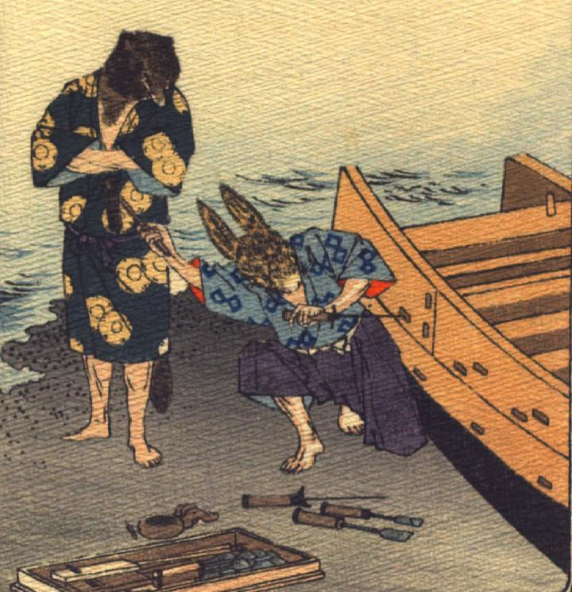

兎と狸。兎は着物に袴を着け、木製の船の傍らにしゃがみ、片膝立ちで、箍らしいものを打ち込んでいる。狸は着物姿で、兎の側に立ち、両腕を組んでいる。背景は水辺である。
著作者：J.Dautremer／出典：親書誌：U426_nichibunken_0101：Le mont Katsi Katsi／日付：2006／資源識別子：U426_nichibunken_0101_0008_0000
Copyright (c)2010- International Research Center for Japanese Studies, Kyoto, Japan. All rights reserved.